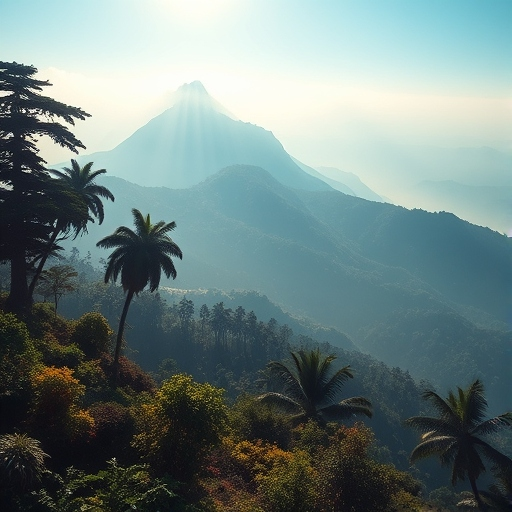

Darjeeling Mountain!
Darjeeling, often referred to as the "Queen of the Hills," is a picturesque hill station nestled in the eastern Himalayas in India. Famous for its lush tea gardens, the region offers breathtaking views of the snow-capped Kanchenjunga, the third-highest mountain in the world. The charming town is known for its colonial architecture, vibrant bazaars, and the famous Darjeeling Himalayan Railway, also known as the "Toy Train."
Darjeeling, often referred to as the "Queen of the Hills," is a picturesque hill station nestled in the eastern Himalayas in India. Famous for its lush tea gardens, the region offers breathtaking views of the snow-capped Kanchenjunga, the third-highest mountain in the world. The charming town is known for its colonial architecture, vibrant bazaars, and the famous Darjeeling Himalayan Railway, also known as the "Toy Train."

Nainital Mountain!
Nainital, often referred to as the "Lake District of India," is a charming hill station located in the Indian state of Uttarakhand. Famous for its serene Naini Lake, surrounded by lush green hills, Nainital offers a perfect retreat for nature lovers and adventure enthusiasts. The town is known for its pleasant climate, picturesque landscapes, and historical sites, including Naina Devi Temple and Snow View Point.
Nainital, often referred to as the "Lake District of India," is a charming hill station located in the Indian state of Uttarakhand. Famous for its serene Naini Lake, surrounded by lush green hills, Nainital offers a perfect retreat for nature lovers and adventure enthusiasts. The town is known for its pleasant climate, picturesque landscapes, and historical sites, including Naina Devi Temple and Snow View Point.